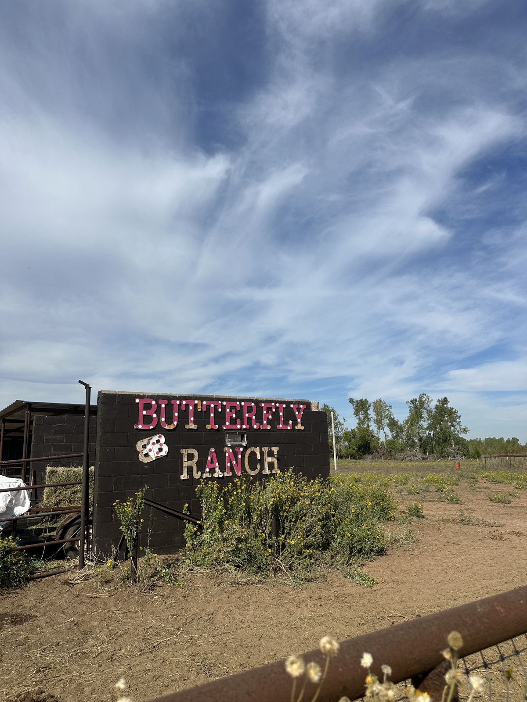
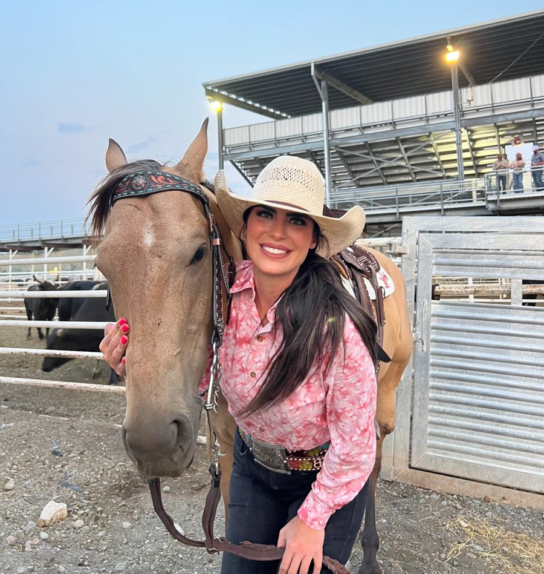
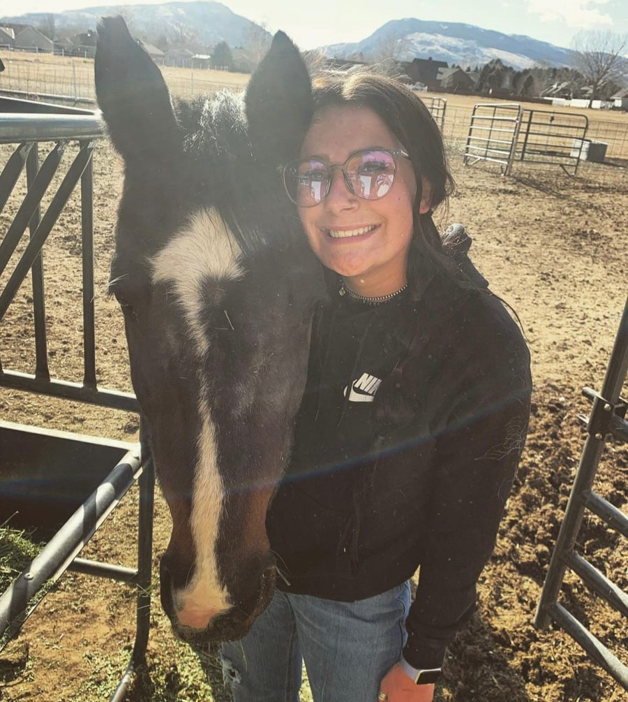
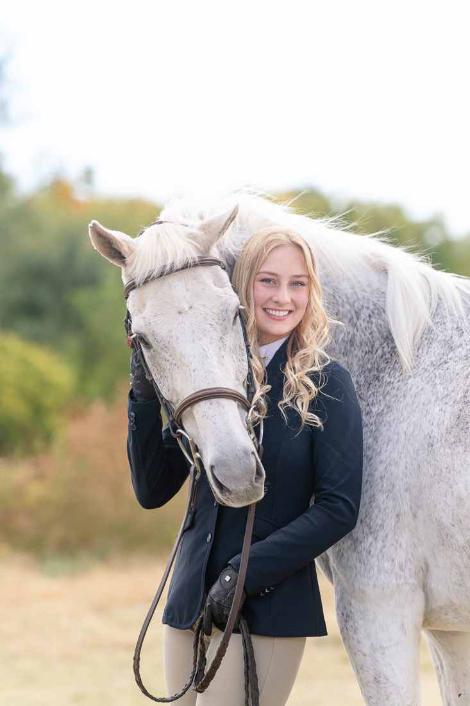

Home › About
AboutStarted in 2022, for the horses
Braxton started Butterfly Ranch because the community needed a place where kids and adults could spend time with horses and get away from city life. The rescue grew out of that, and it is now the heart of it.

The people at the barn

Braxton Brackin
Raised around rodeo and riding for 27 years, Braxton learned calf roping from her uncle before she could walk. She still competes, and teaches with a firm but encouraging style that helps students believe they can do anything they set their minds to.

Anna Foote
Born and raised in Cody, Wyoming, Anna rode six years with a rodeo drill team before moving to Oklahoma after college in 2023. She loves breakaway roping and teaching riders of every age, and making it fun.

Chloe Bjornberg
A former president of the OU Equestrian Team, Chloe has taught English and western lessons for over eight years. She's now in graduate school at OU, working toward becoming a counselor who offers equine-assisted therapy.
Hopeful, not heartbreaking
We don't lead with the worst photo of a horse's life. We show the recovery: weight coming back, feet fixed, the first day a horse walks to the gate on its own. Where a horse came from is part of its story, told plainly, once.
We publish what things cost and where gifts went. Every horse has a page that is updated as it recovers, and every donor hears back about the horse they helped. Your name stays private unless you ask to be thanked by name.
On the record
| Legal name | Butterfly Rescue Ranch |
| Status | 501(c)(3) nonprofit (EIN to be shown) |
| Founded | 2022, by Braxton Brackin |
| Where | 7475 By Drive, Norman, Oklahoma 73072 |
| Phone | (405) 922-0839 |
| What we do | Rescue and rehabilitate horses, in the open; riding lessons, camps and pony parties |
| Photos and film | Photos and film from the October 2026 site visit by OU MKT 4970 students (Kaylee Veeravan, Savannah Fritzen, Team 1). Staff portraits and logo from the ranch. Some hero shots were animated from those photos with AI; nothing in them was invented. |
| This site | A concept by Station, not yet the ranch's official website |
Give once, or a little every month
Every gift goes to hay, feed and care, and you'll hear back about the horse it helped.